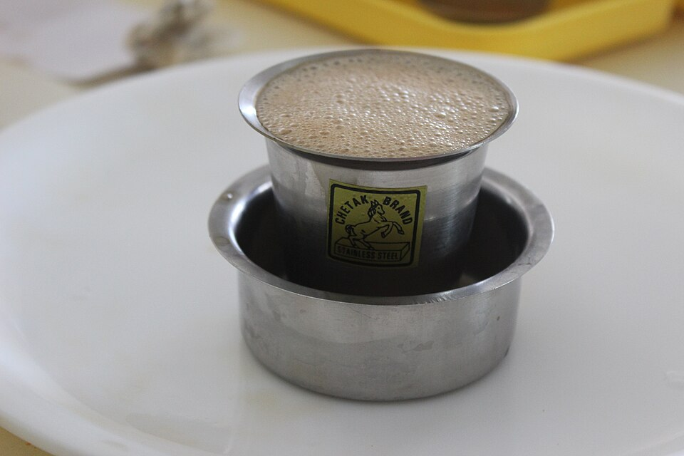

TRADITIONAL DRIP PERCOLATION
Iconic Indian Ritual
South Indian Filter

A beloved stainless steel or brass drip brewer that slowly yields a thick, bittersweet, and velvety "decoction" crafted to blend with hot, frothy boiled milk.
GRIND
Fine / Chicory
RATIO
1:5 (30g / 150ml)
TIME
10 – 15 mins
TEMP
100°C (Boil)
💡 Pro Tip: Rest the pierced umbrella disc lightly on top of the grounds. Never pack or tamp tightly, which could choke the tiny perforations.
Step-by-Step Recipe
1
Assemble & Dose
Place 3 to 4 rounded tablespoons (approx. 25-30g) of dark-roasted coffee into the perforated top chamber.
2
Set the Pierced Disc
Place the pressing disc lightly over the grounds to disperse hot water evenly across the coffee bed.
3
Pour Boiling Water
Pour 120-150ml of freshly boiled water up to the brim. Fasten the lid securely to trap steam.
4
Decoct & Aerate
Allow 10-15 minutes for the thick decoction to collect. Blend 40ml decoction with 100ml hot frothy milk between a tumbler and davarah for signature froth.
Recommended roasts: